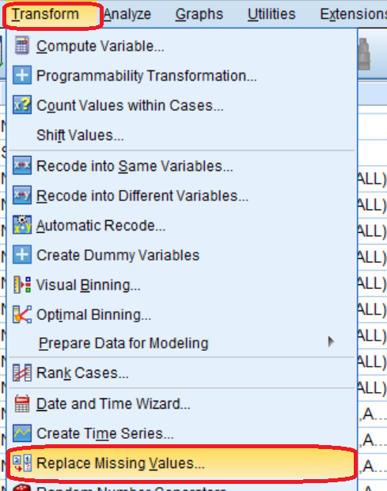
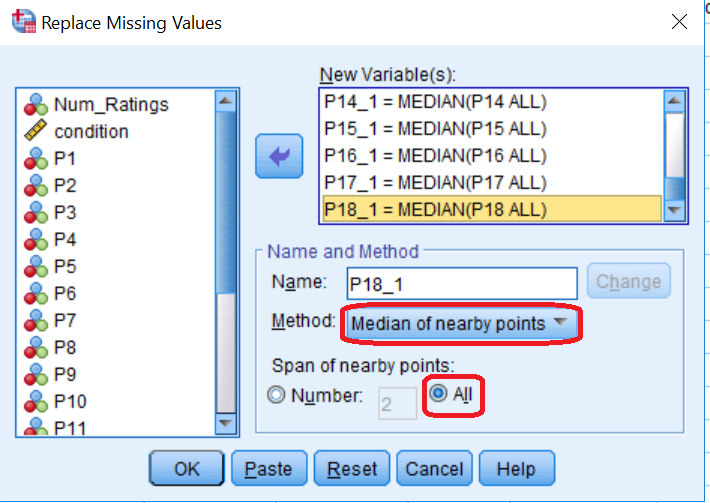
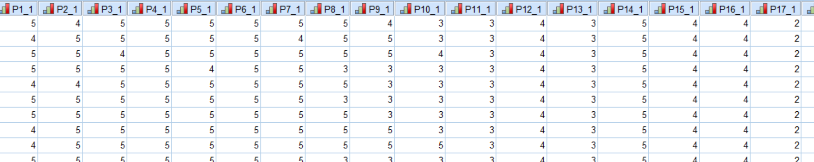

Open the “CS-per file” sheet of the document.
In order to compute the intra-class correlation for the ratings of the participant, each missing value in the ratings of the 18 participants (P1-P18) must be replaced. Because the ratings are ordinal scaled integers, we choose to replace the missing values with the median over all datapoints for that participant.
Transform > Replace Missing Values… > For the method choose the “Median over nearby points” and for the “Span of nearby points” check the option “All”.


Output of the missing data replacement:

Split File based on the “condition” value in order to calculate the intra-class correlation per condition level.